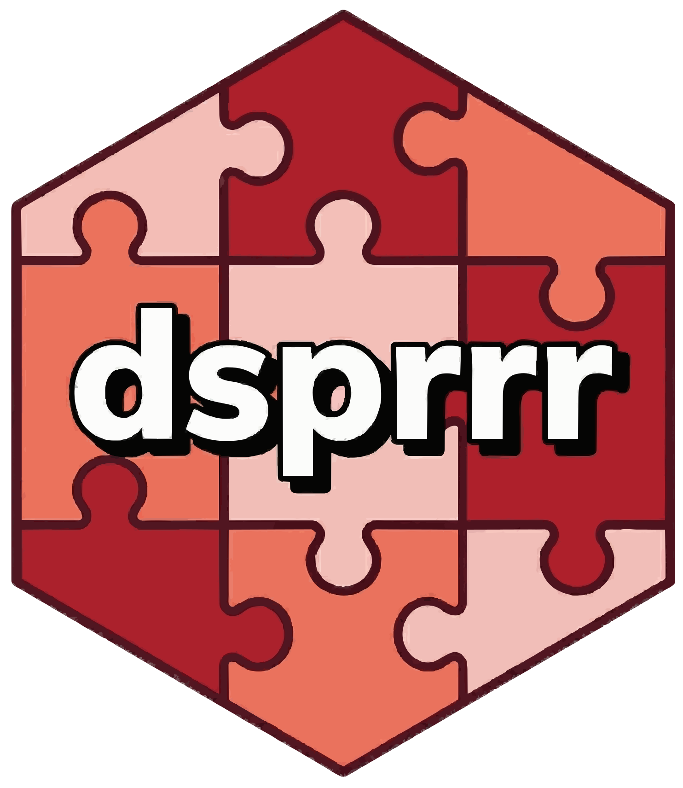

Working with Reasoning Models
Source:vignettes/reasoning-models.Rmd
reasoning-models.RmdIntroduction
Reasoning models like OpenAI’s o1, o3, o4-mini, and GPT-5 series represent a new class of LLMs designed for complex reasoning tasks. These models use internal “thinking” to solve problems step-by-step before providing answers.
dsprrr provides first-class support for reasoning models with automatic parameter handling.
Key Differences from Traditional Models
Reasoning models differ from traditional models in several important ways:
| Feature | Traditional (GPT-4o) | Reasoning (o3, GPT-5) |
|---|---|---|
| Temperature | Supported (0-1) | Not supported |
| Top-p | Supported (0-1) | Not supported |
| Reasoning effort | N/A | low/medium/high |
| Response style | Direct answer | Shows reasoning |
| Cost | Lower | Higher |
Detecting Reasoning Models
dsprrr automatically detects reasoning models using
is_reasoning_model():
# Traditional models
is_reasoning_model("gpt-4o")
is_reasoning_model("claude-sonnet-4-20250514")
# Reasoning models
is_reasoning_model("o3")
is_reasoning_model("o4-mini")
is_reasoning_model("gpt-5")
is_reasoning_model("gpt-5-mini")Using Reasoning Models
Basic Usage
When you use a reasoning model, dsprrr automatically adjusts parameters:
# Configure to use a reasoning model
chat <- chat_openai(model = "o4-mini")
# dsprrr automatically uses reasoning_effort instead of temperature
solver <- module(signature("problem -> solution"))
result <- run(
solver,
problem = "A farmer has 17 sheep. All but 9 run away. How many are left?",
.llm = chat
)Setting Reasoning Effort
Control how much “thinking” the model does with
reasoning_effort:
# Create a module with reasoning effort configuration
chat <- chat_openai(model = "o3")
mod <- module(
signature("question -> answer"),
config = list(
reasoning_effort = "high" # low, medium, or high
)
)
# Complex reasoning task
result <- run(
mod,
question = "What is the 100th prime number?",
.llm = chat
)Module Parameters for Reasoning Models
The module_parameters() function automatically adjusts
available parameters based on the model type:
sig <- signature("text -> analysis")
mod <- module(sig)
# Traditional model parameters
params_traditional <- module_parameters(mod, model = "gpt-4o")
params_traditional
# Reasoning model parameters (no temperature/top_p, has reasoning_effort)
params_reasoning <- module_parameters(mod, model = "o3")
params_reasoningOptimization with Reasoning Models
When optimizing modules that use reasoning models, dsprrr automatically:
- Excludes
temperatureandtop_pfrom the parameter grid - Includes
reasoning_effortas a tunable parameter - Uses appropriate defaults
# Grid search will use reasoning_effort instead of temperature
optimize_grid(
mod,
data = train_data,
metric = metric_exact_match(),
parameters = list(
reasoning_effort = c("low", "medium", "high")
)
)Best Practices
When to Use Reasoning Models
Reasoning models excel at: - Complex math problems - Multi-step logical reasoning - Code generation and debugging - Scientific analysis - Tasks requiring careful deliberation
Traditional models are better for: - Simple classification - Quick factual lookups - High-volume, low-latency tasks - Cost-sensitive applications
Cost Considerations
Reasoning models are significantly more expensive than traditional models:
# Track costs with session_cost()
session_cost()
# For batch processing, consider using lower reasoning effort
chat <- chat_openai(model = "o4-mini")
mod <- module(
signature("text -> category"),
config = list(
reasoning_effort = "low" # Minimize cost for simpler tasks
)
)Summary
- Use
is_reasoning_model()to check if a model requires special handling - Reasoning models use
reasoning_effortinstead oftemperature/top_p -
module_parameters()automatically adjusts for the model type - Choose reasoning models for complex tasks that benefit from deliberation
- Monitor costs carefully as reasoning models are more expensive